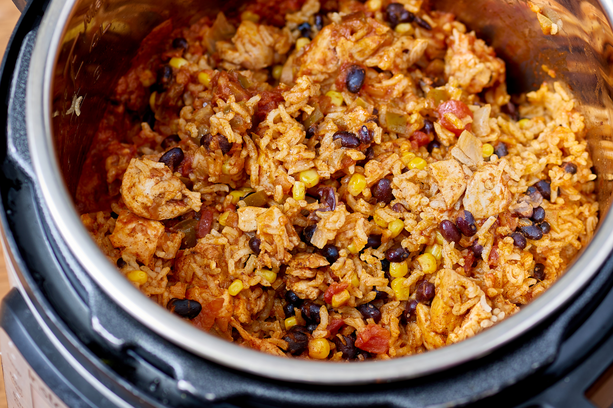

Instant Pot Burritos

Description
Instant pot burritos made with black beans and corn!
Ingredients
- Black beans, drained and rinsed, 1 can
- Corn, drained, 1 can
- White rice, 2 cups
- Taco seasoning, 1/4 cup
- Chicken breasts, 3 to 4 large breasts, cut into 1-2 inch strips
- Medium Salsa, 12 oz
- Water or chicken stock, 2 cups
- Shredded cheese, To taste
- Sour cream, To taste
Directions
- Rinse rice in strainer until water runs clear.
- Pour 1/2 cup of broth/water into the Instant Pot.
- In the following order add: chicken breasts, taco seasoning, rice, black beans, corn, and salsa.
- Add the remaining 1 and 1/2 cups of broth/water. Use rice paddle to press all ingredients into liquid.
- Making sure the rubber ring is secure, secure the lid and set the valve to sealing.
- Cook at high pressure on Manual for 10 minutes. After pressure cook is complete, allow NPR for 5 minutes. Release the remaining pressure and remove the lid.
- Use tongs to remove chicken breasts. Shred or cut as desired.
- Serve in a bowl, on a tortilla, or with chips. Garnish as desired with shredded cheese, sour cream, taco sauce, and cilantro.